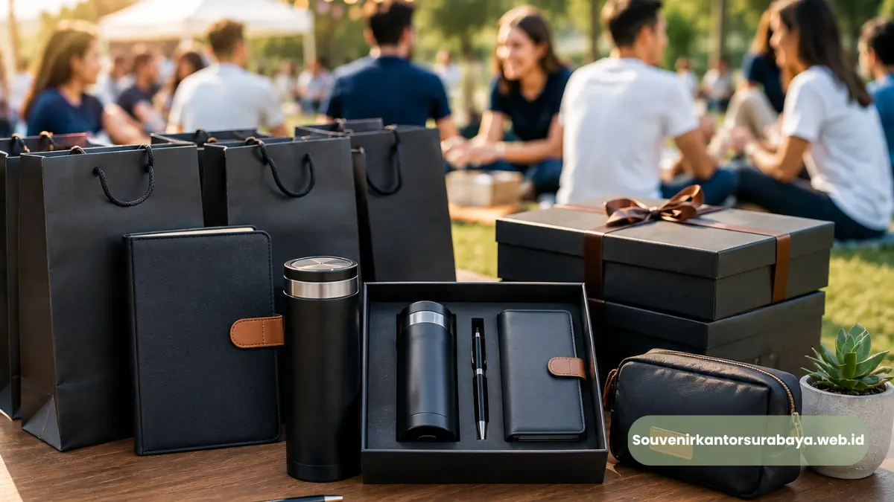

Souvenir kantor untuk event korporat Surabaya adalah merchandise yang disiapkan khusus untuk mendukung acara bisnis seperti seminar, gathering karyawan, dan perayaan akhir tahun perusahaan.
Produk ini biasanya dipilih berdasarkan jumlah peserta, tema acara, dan kesan yang ingin dibangun perusahaan.
Ketersediaan souvenir yang tepat dapat meningkatkan kesan profesional sekaligus kenyamanan peserta selama acara berlangsung.
- Souvenir kantor untuk event korporat disesuaikan dengan jenis acara, mulai dari seminar hingga gathering karyawan.
- Goodie bag dan drinkware custom logo menjadi pilihan populer untuk acara berskala besar.
- Souvenir akhir tahun perusahaan umumnya dipilih dengan kesan lebih personal dan berkelas.
- Perencanaan waktu pemesanan yang tepat memastikan souvenir siap sebelum tanggal acara.
- Souvenir event korporat turut memperkuat pengalaman peserta terhadap brand perusahaan penyelenggara.
Apa Itu Souvenir Kantor untuk Event Korporat dan Mengapa Dibutuhkan?
Souvenir kantor untuk event korporat adalah merchandise yang dibagikan kepada peserta acara bisnis sebagai bentuk apresiasi sekaligus media branding perusahaan penyelenggara.
Kebutuhan ini muncul karena setiap acara korporat, baik internal maupun eksternal, membutuhkan elemen yang meninggalkan kesan positif bagi peserta.
Pada acara seperti seminar atau workshop, souvenir turut membentuk pengalaman peserta secara keseluruhan.
Goodie bag yang berisi alat tulis, notebook, atau drinkware custom logo memberikan nilai tambah yang membuat peserta merasa acara tersebut dikelola secara profesional.
Hal ini secara tidak langsung turut membangun reputasi perusahaan penyelenggara di mata peserta maupun calon klien yang hadir.
Sementara pada acara internal seperti gathering karyawan, souvenir berfungsi memperkuat rasa kebersamaan dan apresiasi perusahaan terhadap kontribusi tim selama periode kerja tertentu.
Souvenir Apa yang Cocok untuk Seminar, Gathering, dan Acara Akhir Tahun Perusahaan?
Souvenir yang cocok untuk seminar umumnya berupa goodie bag berisi alat tulis dan notebook.
sementara untuk gathering karyawan lebih cocok menggunakan drinkware atau apparel custom, dan untuk acara akhir tahun perusahaan dapat dipilih souvenir dengan kesan lebih personal dan berkelas.
Souvenir untuk Acara Seminar dan Workshop
Goodie bag berisi notebook, pena, dan flashdisk custom logo menjadi pilihan praktis untuk acara seminar karena mendukung kebutuhan peserta selama sesi berlangsung, sekaligus menjadi media branding yang dibawa pulang.

Souvenir untuk Gathering Karyawan
Tumbler, kaos custom, atau topi dengan logo perusahaan sering dipilih untuk acara gathering karena mendukung suasana santai namun tetap merepresentasikan identitas perusahaan secara konsisten.
Souvenir untuk Acara Akhir Tahun Perusahaan
Pada momen akhir tahun, perusahaan umumnya memilih souvenir dengan kesan lebih personal seperti hampers custom.
Produk berbahan kayu, atau paket suvenir tematik yang mencerminkan apresiasi atas kinerja tim selama satu tahun.
Baca Juga
Kapan Waktu Ideal Memesan Souvenir untuk Event Korporat?
Waktu ideal memesan souvenir untuk event korporat adalah beberapa minggu sebelum tanggal acara, tergantung jenis produk, teknik cetak, dan jumlah pesanan yang dibutuhkan.
Pemesanan yang dilakukan terlalu mendekati hari acara berisiko membatasi pilihan produk maupun waktu produksi.
Untuk acara dengan jumlah peserta besar seperti seminar korporat berskala nasional, perencanaan lebih awal memungkinkan proses custom logo dan quality control dilakukan secara lebih matang.
Sementara untuk acara internal berskala lebih kecil, waktu persiapan dapat disesuaikan namun tetap disarankan tidak dilakukan secara mendadak agar kualitas produk maupun konsistensi desain tetap terjaga.
Agar souvenir event korporat perusahaan Anda siap tepat waktu dengan kualitas terbaik, segera diskusikan kebutuhan dan tanggal acara Anda melalui souvenirkantorsurabaya.web.id.

Hawa Nadira
Tim penulis CorporateGifts ID berfokus pada strategi souvenir kantor, merchandise korporat, dan inovasi brand untuk klien B2B.
Keahlian: Branding perusahaan, produksi souvenir, paket event, desain materi promosi.
Artikel Terkait

Ragam Souvenir Kantor Elegan untuk Mitra Bisnis di Surabaya
Pelajari ragam souvenir kantor elegan untuk mitra bisnis di Surabaya, dari alat tulis premium hingga aksesori korporat untuk memperkuat hubungan kerja sama.
Baca Selengkapnya
Ide Souvenir Kantor Elegan untuk Mitra Bisnis
Ide souvenir kantor elegan untuk mitra bisnis, mulai dari buku agenda kulit, alat tulis eksekutif, hingga aksesori kerja bermaterial kulit atau logam.
Baca Selengkapnya
Tas Kerja Kulit Pria Eksekutif Perusahaan Surabaya Premium
Tas kerja kulit pria eksekutif perusahaan Surabaya merupakan pilihan tas dokumen premium berbahan kulit asli yang dirancang khusus untuk menunjang profesionalisme.
Baca Selengkapnya